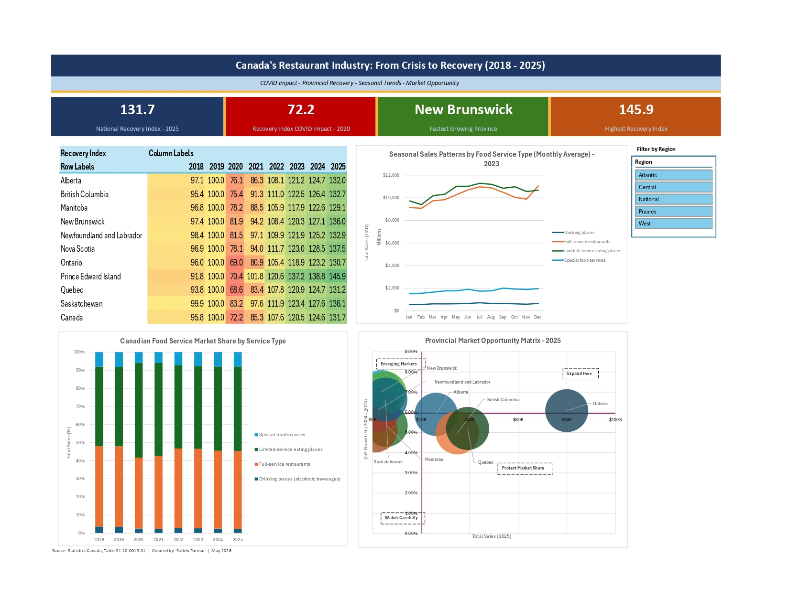
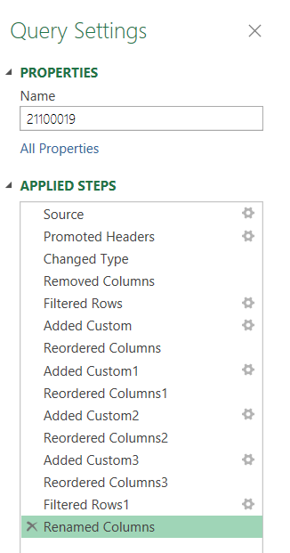
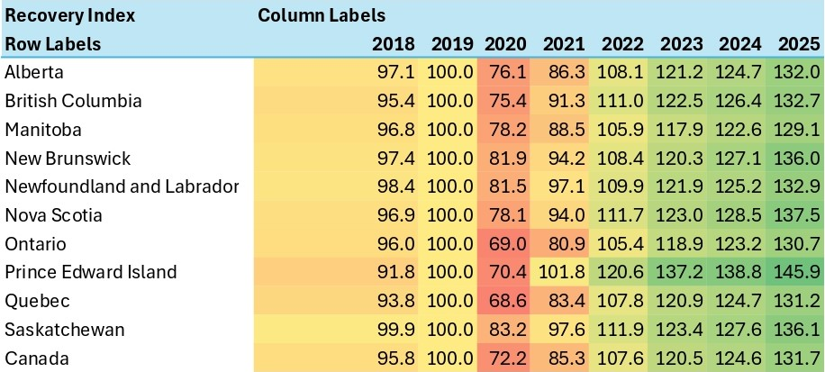
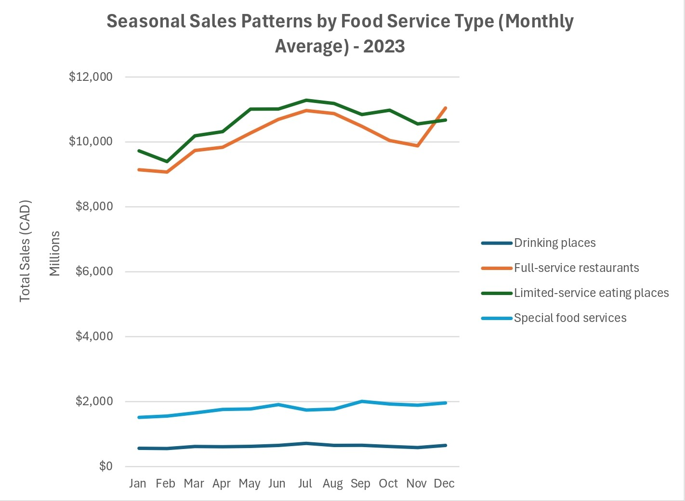
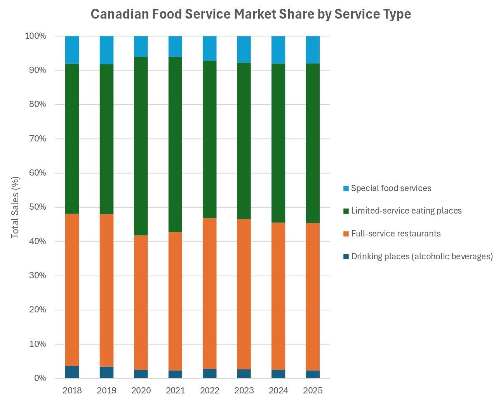
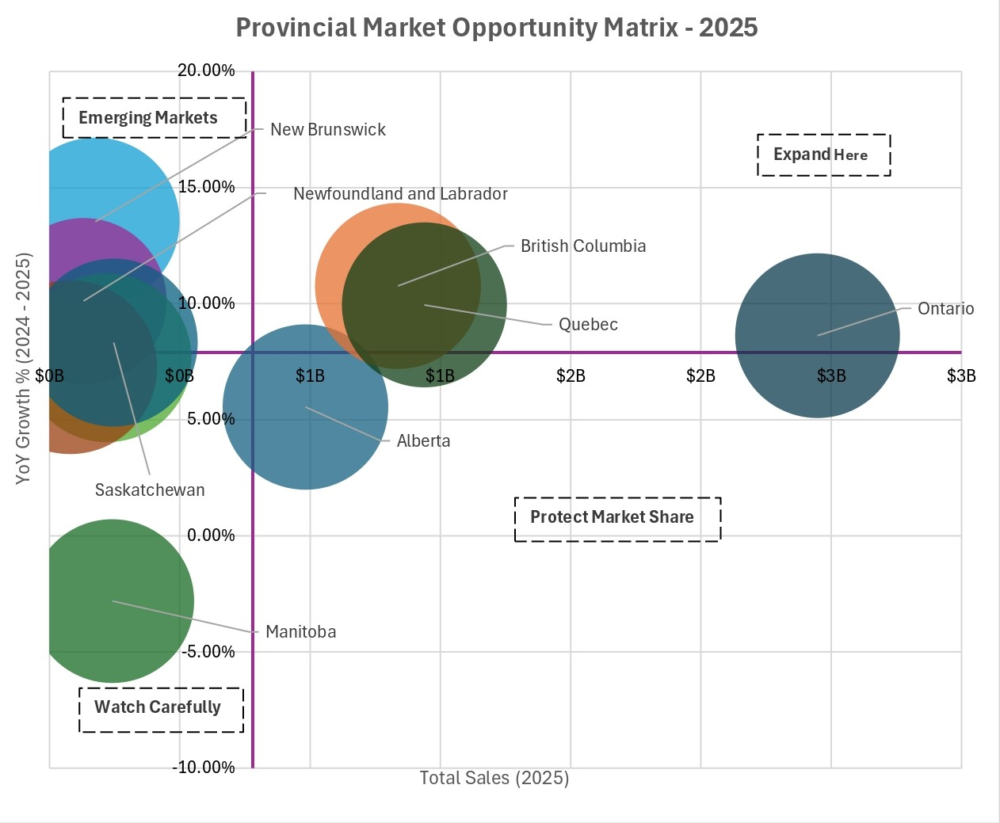

Canadian Food Service Industry Analysis
BC is Canada's best expansion opportunity. Manitoba is declining. The data shows exactly where to open and where not to.

The Bottom Line
If a restaurant chain asked me where to open their next location in Canada, I could answer with data. Using Statistics Canada's monthly food service revenue data (2018–2025), I built a four-part analysis covering COVID recovery by province, seasonal staffing patterns, market structure shifts, and a provincial opportunity matrix that plots every province by market size and growth momentum. The short answer: expand in BC and Ontario, watch Atlantic Canada, and do not open in Manitoba right now. Built entirely in Excel using Power Query, Power Pivot, and DAX.
Project Overview
This project analyzes Canada's food service industry using official government data from Statistics Canada (Table 21-10-0019-01) covering January 2018 to December 2025. The dataset captures monthly sales across all provinces and four service categories: full-service restaurants, limited-service eating places, drinking places, and special food services.
The goal was to answer four real business questions that a regional restaurant chain's operations or strategy team would genuinely care about:
- Which provinces recovered from COVID fastest, and which are still lagging?
- When does each type of food service peak and trough through the year?
- Is the Canadian market shifting from full-service to limited-service dining post-COVID?
- If a restaurant chain wanted to expand, which provinces offer the best combination of sales growth and market size?
Key Findings at a Glance
The Data Source
Data was sourced directly from Statistics Canada, Table 21-10-0019-01 — Monthly Survey of Food Services and Drinking Places. This is seasonally adjusted monthly revenue data published by the federal government, updated regularly, and freely available as a CSV download.
Before importing, the STATUS column was reviewed per Statistics Canada documentation to understand data suppression flags. The suppressed values (marked x or F) were repalced as nulls in the VALUE column as removing the null rows would silently make the totals wrong.
Methodology
1. Power Query - Data Cleaning & Transformation
The raw CSV was imported using Power Query and cleaned through 11 documented transformation steps, all visible in the Applied Steps panel for full auditability.
Transformation steps applied

Power Query Applied Steps panel — every transformation is documented and auditable.
- Filtered data to 2018 onwards using Date Filters - keeping pre-COVID baseline, COVID crash, and recovery periods.
- Removed unnecessary columns: DGUID, VECTOR, SCALAR_FACTOR, UOM, STATUS, SYMBOL, TERMINATED, DECIMALS - reviewed the metadata documentation before removing to confirm each column's purpose.
- Extracted Year, Month Number, and Month-Year label columns from the REF_DATE date column using
Date.Year(),Date.Month(), andDate.ToText()functions. - Changed VALUE column data type to Decimal Number and left nulls in place - removing them would silently distort provincial totals.
- Added custom column called Province_Code - a short version of the full province names. Also, filtered out NWT, Yukon and Nunavut as their data was too sparse and supressed to be useful.
- Renamed columns to descriptive names: Sales_Thousands, Service_Type, Province_Code.
- Loaded as connection only -- Add to Data Model - keeping the workbook clean while making data available to Power Pivot.
2. Province Lookup Table - Data Enrichment
A Province_Lookup table was manually created and added to the Data Model, enriching the raw data with Region and Population_Group classifications not present in the original dataset.
The lookup table maps each province code to its full name, region (West, Central, Prairies, Atlantic), and population group (Large, Medium, Small). This enrichment enabled the Region slicer on the dashboard and the XLOOKUP demonstrations on the Province Summary sheet.
3. Power Pivot Data Model - Star Schema
The two tables were connected in Power Pivot using a many-to-one relationship through Province_Code, forming a star schema - the standard structure used in professional BI tools including Power BI.
FoodService_Adjusted (fact table - thousands of rows of monthly sales data) connected to Province_Lookup (dimension table - 11 province records) via Province_Code. This relationship allows PivotTables to filter sales data by Region from the lookup table without any additional formulas.
4. DAX Measures
Four DAX measures were created in Power Pivot to enable dynamic, context-aware calculations across all PivotTables.
Total Sales
Sums Sales_Thousands filtered to the "Total, food services and drinking places" NAICS category and multiplies by 1,000 to convert to actual dollars - eliminating double-counting from individual subcategory rows.
YoY Growth %
Uses CALCULATE with SAMEPERIODLASTYEAR to shift the date context back 12 months, then calculates the percentage change. DIVIDE is used instead of standard division to return blank (not an error) when the denominator is zero.
vs 2019 Baseline %
Uses a VAR variable to store the 2019 baseline, calculated with ALLEXCEPT to preserve the province filter while replacing the year filter with 2019. This ensures every province is compared to its own 2019 performance, not the national total.
Recovery Index
Same structure as vs 2019 Baseline, but returns a score (100 = fully recovered, below 100 = still lagging, above 100 = exceeded pre-COVID levels) rather than a percentage change. More intuitive for dashboard display.
5. XLOOKUP - Basic and Multi-Condition
A Province Summary sheet demonstrates two levels of XLOOKUP complexity.
Basic XLOOKUP - Province metadata
Pulls Region and Population_Group from the Province_Lookup table using Province_Code as the lookup key:
=XLOOKUP(A2, Province_Lookup[Province_Code], Province_Lookup[Region], "Not Found")
Multi-condition XLOOKUP - Sales by province, year, and service type
Combines three columns into a composite lookup key using & concatenation - retrieving total food service sales for a specific province and year without helper columns:
=XLOOKUP(A2&"2024"&"Total, food services and drinking places", FoodService_Adjusted[GEO]&FoodService_Adjusted[Year]&FoodService_Adjusted[NAICS], FoodService_Adjusted[Sales_Thousands], "No data")*1000
Why this approach: multi-condition XLOOKUP eliminates the need for helper columns or INDEX-MATCH arrays, producing cleaner, more maintainable formulas. Structured table references ([@[column]] syntax) were used throughout for self-documenting, row-safe formulas.
Nested IF — Market Tier Classification
After calculating the vs 2019 Baseline % for each province, a nested IF formula was used to classify each province into a growth tier based on the actual data range — thresholds were deliberately redesigned after observing that all provinces had fully recovered, making a standard recovery classification meaningless:
=IF(G2>0.35,"Exceptional Growth",IF(G2>0.25,"Strong Growth","Moderate Growth"))
The thresholds (35% and 25%) were not arbitrary — they were set after reviewing the actual distribution of provincial growth rates against the 2019 baseline, which ranged from 20% to 46% by 2024.
Conditional Formatting was applied to the Market Tier column to make the classification visually immediate:
- Exceptional Growth — green fill, for provinces above 35% vs 2019 (PEI at 46%)
- Strong Growth — light green fill, for provinces between 25–35% (SK, NS)
- Moderate Growth — yellow fill, for provinces below 25% (BC, AB, MB, ON, QC, NB, NL)
The Four Analyses
Analysis 1 - COVID Crash & Provincial Recovery
Business question: Which provinces recovered from COVID fastest, and which are still lagging?

Figure: Recovery Index Heatmap by Province (2018–2025). Red = below pre-COVID levels. Green = exceeded pre-COVID levels.
A PivotTable from the Data Model shows Recovery Index scores for each province by year, formatted as a red-yellow-green color scale with 100 as the midpoint. The 2019 column shows exactly 100.0 for every province, confirming the baseline calculation is correct.
- 2020 crash - every province dropped well below 100, with Ontario (69.0) and Quebec (68.6) hit hardest due to urban density and stricter lockdown enforcement.
- 2022 recovery - most provinces crossed back above 100, exceeding pre-COVID levels as restrictions lifted and pent-up dining demand surged.
- 2025 leaders - PEI (145.9) and Nova Scotia (137.5) show the strongest recovery indices, driven by domestic tourism growth and interprovincial migration to Atlantic Canada.
Analysis 2 - Seasonal Patterns by Service Type
Business question: When does each type of food service peak and trough through the year?

Figure: Monthly average sales by service type - 2023 (first fully normal post-COVID year).
A line chart using 2023 data - the first fully normal post-COVID year — shows true seasonal patterns unaffected by lockdown distortions.
- Full-service restaurants - pronounced summer peak (July-August), clear winter trough (January-March). Classic patio season pattern confirmed by data.
- Limited-service eating places - remarkably flat across all 12 months. Fast food demand is largely season-independent, requiring consistent year-round staffing rather than seasonal scaling.
- Drinking places - slight December uptick from holiday celebrations, otherwise stable.
- Special food services - September spike driven by corporate catering resuming after summer and back-to-school event season.
Operational implication: full-service operators should plan for 15-20% higher staffing and inventory in July-August versus January-February. Limited-service operators can maintain flat staffing models year-round.
Analysis 3 - Full-Service vs Limited-Service Market Share Shift
Business question: Is the Canadian market shifting from full-service to limited-service dining post-COVID?

Figure: 100% stacked bar showing each service type's share of total sales by year (2018–2025).
Despite widespread industry predictions of a permanent shift toward fast food and delivery post-COVID, the data tells a different story.
- Full-service restaurants maintained their share within 2-3 percentage points of pre-COVID levels across all years.
- Limited-service share showed only marginal gains - not the structural shift many forecasters predicted.
- The market composition proved remarkably stable despite the shock of COVID and subsequent inflation pressures.
Strategic implication: Canadian dining habits are structurally resilient. A restaurant chain evaluating whether to pivot from full-service to fast-casual based on post-COVID trends would be overreacting to a temporary signal rather than a permanent structural shift.
Analysis 4 - Provincial Market Opportunity Matrix
Business question: Which provinces offer the best combination of market size and growth momentum for expansion?

Figure: Bubble chart - X axis = 2025 total sales (market size), Y axis = YoY growth % (momentum), bubble size = Recovery Index 2025.
A bubble chart plots all 10 provinces across three dimensions simultaneously. Two reference lines (set at average market size and average growth) divide the chart into four strategic quadrants.
- Expand Here (top right) - Ontario ($2.9B, +8.6%) and British Columbia ($1.3B, +10.8%). Large markets with above-average growth - highest priority for new locations.
- Emerging Markets (top left) - New Brunswick (+13.5%), Newfoundland (+10.1%), Nova Scotia (+7.7%). Small but fast-growing markets - ideal for first-mover regional expansion before competition intensifies.
- Protect Market Share (bottom right) - Quebec ($1.4B, +9.95%) sits near the boundary. Large market but growth is moderating - focus on operational efficiency over aggressive expansion.
- Monitor Closely (bottom left) - Manitoba (-2.81%) is the only province declining in 2025. Existing operators should focus on retention, not growth. Saskatchewan (8.32%) sits marginally below the national average growth threshold of 7.89% - not declining, but losing momentum relative to the rest of the country. A market worth watching rather than expanding into aggressively.
Notable finding: British Columbia stands out as the strongest large-market performer in 2025 - at +10.76% YoY growth with $1.3B in sales, it combines large market size with above-average momentum, making it the most compelling expansion opportunity among Canada's major provinces.
Analyst's Perspective
This section connects the data findings to real operational experience - something the numbers alone cannot provide.
1. The Recovery Story Is More Nuanced Than the Headlines Suggest
What the data shows
The national Recovery Index of 131.7 in 2025 suggests the industry is thriving, which is, 31.7% above pre-COVID levels. But this figure includes significant inflation in menu prices.
The operational reality
Having worked in food service operations in Canada during the recovery period, the gap between revenue recovery and volume recovery was visible firsthand. A restaurant doing $1.3M in 2025 versus $1M in 2019 isn't necessarily serving 30% more customers - it may be charging 25% more per cover. The nominal recovery overstates the operational rebound. Operators expanding based on revenue recovery metrics alone risk overestimating true market demand.
What this means for analysts
Always ask whether revenue growth reflects volume growth or price growth. In food service post-2022, the answer is often "mostly price." A more complete analysis would layer in Statistics Canada's restaurant price index to deflate these numbers - a natural next step for this project.
Metric to track: Real (inflation-adjusted) sales growth by province, comparing nominal recovery index against CPI for food purchased from restaurants.
2. PEI's 145.9 Recovery Index Needs Context Before Acting On It
What the data shows
PEI has the highest Recovery Index of any province at 145.9 - nearly 50% above pre-COVID levels. On the surface, this looks like the best expansion opportunity in Canada.
The operational reality
PEI's food service revenue is heavily tourism-driven. Post-COVID domestic tourism surged as Canadians who would have travelled internationally instead explored their own country. PEI was a primary beneficiary. The 145.9 index does not represent organic local market growth - it represents a tourism dividend that may not be permanent as international travel normalizes. A restaurant chain entering PEI based on this metric alone would be misreading the data.
The analytical lesson
Understanding why a number is high is as important as knowing that it is high. Domain knowledge - in this case, knowing that PEI's economy is structurally tourism-dependent - prevents analytical errors that pure number-crunching cannot catch.
Metric to track: PEI tourism arrival numbers alongside food service revenue - if they correlate strongly, the Recovery Index is a tourism indicator, not a market strength indicator.
3. Manitoba's Decline Is the Most Actionable Finding for Existing Operators
What the data shows
Manitoba is the only large province showing negative YoY growth in 2025 (-2.81%), sitting in the "Monitor Closely" quadrant of the opportunity matrix.
The operational implication
For any restaurant chain with Manitoba locations, this is a signal to shift strategy from growth to defence - renegotiate leases, tighten cost controls, evaluate underperforming locations before the decline deepens. A declining market rewards operational efficiency, not expansion investment.
Metric to track: Manitoba same-store sales versus new location openings - if same-store sales are flat but new openings are diluting the average, the market signal is worse than the aggregate data suggests.
Summary
TOOLS
Excel - Power Query, Power Pivot, DAX, XLOOKUP, PivotTables, Conditional Formatting, Bubble Chart, Stacked Bar, Line Chart
DATA SOURCE
Statistics Canada, Table 21-10-0019-01 - Monthly Survey of Food Services and Drinking Places (2018–2025)
OBJECTIVE
Analyze Canada's food service industry recovery from COVID, identify seasonal patterns, assess market structure shifts, and build a provincial market opportunity framework for strategic decision-making.
KEY SKILLS DEMONSTRATED
Power Query (multi-step transformation pipeline), Power Pivot (star schema data model), DAX measures (CALCULATE, ALLEXCEPT, SAMEPERIODLASTYEAR, VAR), XLOOKUP (basic and multi-condition composite key), Structured table references, Recovery Index design, Quadrant analysis framework, Interactive dashboard with cross-connected slicer, Data enrichment via lookup table
KEY FINDINGS
- National Recovery Index 131.7 in 2025
- PEI leads all provinces at 145.9 Recovery Index
- Market structure unchanged post-COVID
- BC leads large-market growth at +10.76% YoY
- Manitoba only declining province in 2025
Explore the Project
View the full Excel workbook including all four analyses, DAX measures, Power Query steps, and interactive dashboard on GitHub.